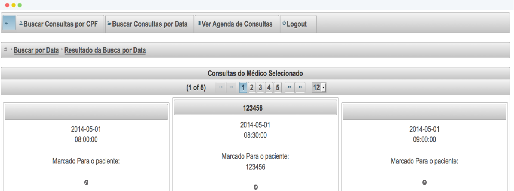

Introducing DenTOP
Dentist Timetable Organizer Program
A web system created for you not to worry about the scheduling of your dentist company.

Dentist Timetable Organizer Program
A web system created for you not to worry about the scheduling of your dentist company.

No more problems of two appointments schedule for the same time.
Appointments seen in a clean but detailed interface.

You can review all the information from the appointments easily.